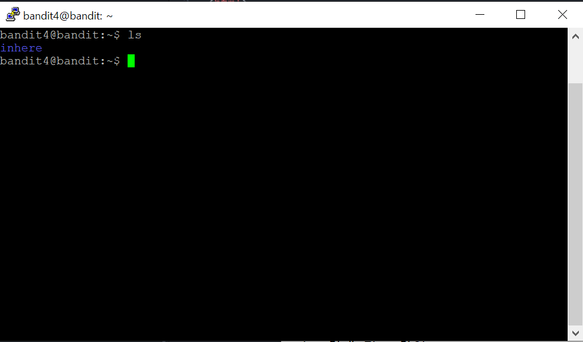

문제를 읽어보니 다음 단계를 위한 패스워드는 inhere라는 디렉토리 안에
인간이 읽을 수 있 유일한 파일 하나에 있다고 합니다.
그러면 일단 ls 명령어를 통해서 어떤 파일들이 있는지 한 번 봐볼까요?

inhere 라는 디렉토리가 있네.
그럼 cd라는 명령어로 나의 디렉토리를 바꿔보자
inhere라는 디렉토리 안에 파일이 있다고 했으니까 ls로 있는 파일을 한 번 봐볼까?
파일이 9개나????
음...........
원래 모든일에 기본은 노가다인 법..... 일단 뭔가 7번파일일 것 같아!
파일이름에 -이 들어가니까 저번처럼 cat < -file07 하면 되겠지?